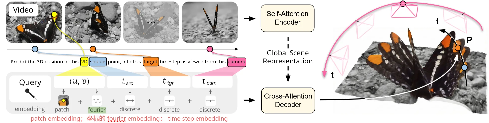
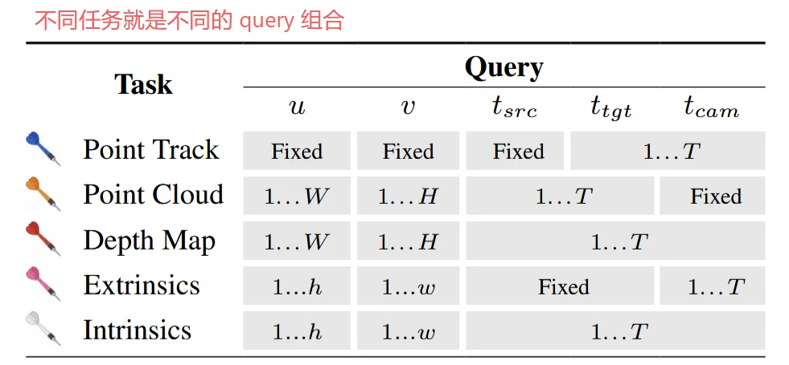
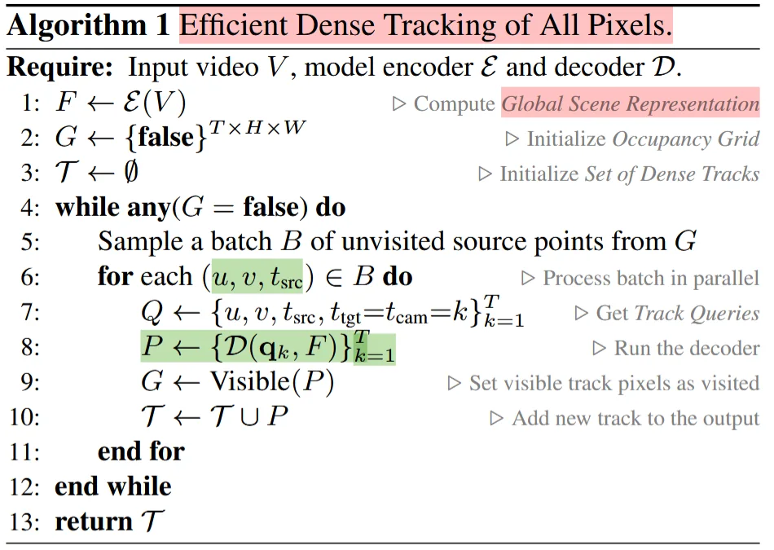
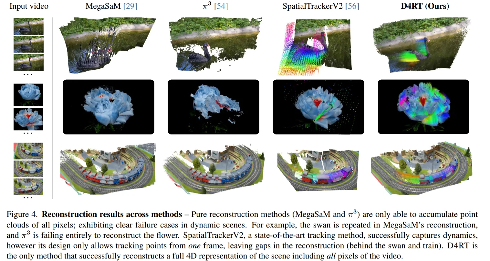
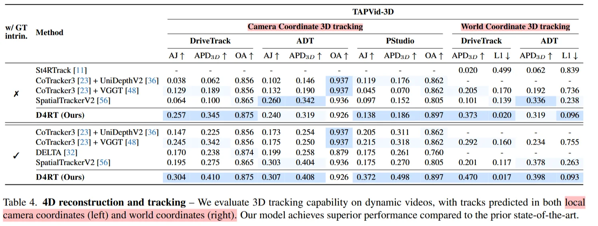
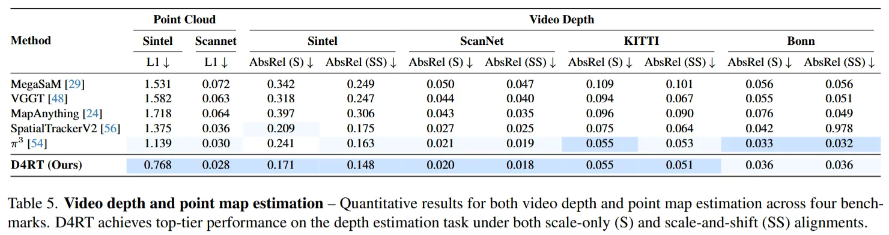
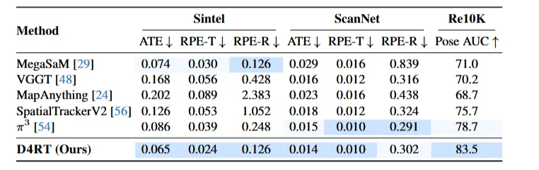
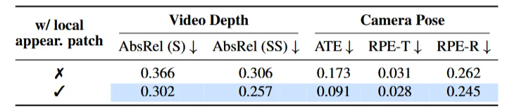

Efficiently Reconstructing Dynamic Scenes One D4RT at a Time
[!tip] 概览 给一段 2D 视频，模型能推理任意 frame 的任意 pixel 在任意 t 时刻的任意相机坐标系下的 3D 位置。 把 4D reconstruction 规为统一的 point-query 问题，用 independent pointwise cross-attention decoder 替代 dense heads.
0. Pipeline
流程可拆成两段： 1. Video Encoder：输入整段视频，经过 ViT-style video encoder 得到一个固定的 Global Scene Representation； 2. Pointwise Decoder：对每个 query token 独立做 cross-attention，从 global representation 中读出一个 3D point。
不一次输出所有 depth / pose / tracks，提供一个统一查询接口：问哪个点、哪个时刻、哪个相机坐标系，就返回对应的 3D 坐标。
1. Method
用一个视频 encoder 把整个 clip 编码成 global scene representation. 经过一个轻量的 cross attention decoder 独立查询任意 source point 在任意 target time 和 camera pose 下的 3d 坐标。

每一个 Query 包含 (u,v,tsrc,ttgt,tcam) 。含义是：从 source timestep 的 2D 点 (u,v) 出发，查询它在 target time 的状态，并在 camera time tcam 的坐标系下表示。query token 由 2D 坐标 Fourier embedding、离散 timestep embedding，以及局部 RGB patch embedding 组成。
局部 RGB patch embedding 全局 encoder 的 token 分辨率有限，易丢失边界和细节。 局部 patch 给 decoder 额外提供局部纹理、边缘、颜⾊等低层信息 深度边界和动态点的对应关系更准确。
没有 pose head 怎么得到 pose？通过点的 3D 位置来推导相机之间的相对位姿。 很多组 (u,v)，然后查询 (u,v,i,i,i) 和 (u,v,i,i,j) 这样就得到 i 帧的 pixel (u,v) 在 i 帧 时刻，i 帧 pose 和 j 帧 pose 下的 3d 位置。 一组 pixel 的两个 pose 下的 3d 位置，通过刚体变换（文中用 Umeyama算法）就可以得到 i 帧和 j 帧之间的相对位姿关系。


tracking 本身不是 reconstruction；只有 metric 3D all-pixel tracking + 统一 reference frame 才更接近完整的 4D scene reconstruction。
D4RT 的 all-pixel tracking 逻辑是：
- 从某些未访问 pixels 出发，发起 point tracks；
- 对每条 track 查询它在所有 target timesteps 的 3D 位置；
- 将这条 track 在时空中经过且 visible 的 pixels 标记为 visited；
- 只从未覆盖区域继续发起新 tracks；
- 最终用尽量少的 tracks 覆盖整段视频中的可见 pixels。
朴素做法要对所有 source pixels、所有 target timesteps 全部查询，复杂度接近：O(T2HW)
D4RT 用 occupancy grid 利用时空冗余，带来了约 5-15× 的自适应加速。虽然避免了大量的重复查询，但是：
[!danger] infere 的复杂度随查询点数量线性增长 Encoder 只算一次，但 decoder 查询越多，计算越多。 如果全帧、全像素、全时间地重建，query 数量还是非常大。
2. Experiments
| 项目 | 设置 |
|---|---|
| Encoder | ViT-g，约 1B parameters |
| Decoder | 8-layer cross-attention decoder，约 144M parameters |
| Training clip | 48 frames |
| Resolution | 256 × 256 |
| Queries per clip | 2048 random queries，并对 depth / motion boundary 等困难区域 oversample |
| Optimizer | AdamW |
| Training steps | 500K |
| Hardware | 64 TPU chips |
| Training time | 约 2 天 |




3. Limitations
- 长序列还是没解决，依赖 GA，是一个 short-window 4D query model.
- long-sequence 处理并不是真的在线全局地图系统，而是和 VGGT-long 一样：
- 把长视频切成 overlapping segments；
- 对 overlap 区域中 confidence 最高的 85% 点；
- 用 Umeyama 估计 Sim(3)；
- 拼接 chunk；
- 明确省略 VGGT-Long 中的 loop detection 和 global optimization。
- 强依赖 local RGB patch，很多高频边界来自局部图像patch
- 如果 patch 没有纹理或者弱纹理，decoder 接近 appearance-conditioned regression

- inference scales linearly with the number of points to be reconstructed
- 计算复杂度被巧妙回避了，假如每帧要查询大量点甚至全图像素，复杂度接近 O(T·H·W)
一些思考
如果把全局场景表示 F 从 full-clip latent 换成 online map state / register-indexed memory / external spatial memory，可能让 D4RT 走向真正的 streaming query reconstruction 吗？
[!example] 可以做的 把 D4RT 的只从 full-clip global scene representation 查询改成：
q = (u,v,tsrc,ttgt,tcam) + Mt
这里 Mt 是能在线更新的 external map / memory state。 那么 query decoder 就不只是读整段 clip latent，还能读到当前维护的长时序 spatial memory。